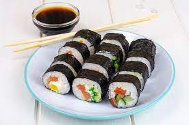

Sushi

Description
Easy and simple to make sushi rolls. This low cost recipe salmon sushi
roll is a great alternative to the expensive costs that come with dining at restauraunts.
Saving money is not the only positive as they taste amazing as well!
Ingredients
- 1 cup of uncooked white rice
- 2 cups of water
- 2 tbsp rice vinegar
- 2 sheets of nori seaweed sheets
- 1/4 cucubmber, sliced and peeled vertically
- 4 oz smoked salmon
- 3 oz cream cheese
Steps
- Get all of the ingredients together.
- Boil rice in a saucepan. Reduce heat until rice is tender and liquid has been absorbed
- Stir in rice vinegar and salt into the rice and allow to cool
- Place seaweed sheets flat and moisten hands with water. Spread cool rice on the sheet evenly, leaving a small gap along one edge lengthwise.
- Arrange strips of salmon, cucumber, and creamcheese along the rice lengthwise, opposite from the gap.
- Roll the sushi starting from the sushi side to the seaweed exposed side.
- Slice each roll into 6 pieces using a sharp and wet knife.